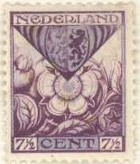
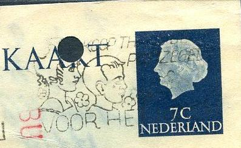

Return To Catalogue - Netherlands 1852-1871 - Netherlands 1872-1897 - Netherlands 1898-1906 - Netherlands 1907-1924
Note: on my website many of the
pictures can not be seen! They are of course present in the
catalogue;
contact me if you want to purchase it.
For issues of the Netherlands from before 1925, click here.

2 c (+2 c) green and orange (Noord-Brabant) 7 1/2 c (+3 1/2 c) violet and blue (Gelderland) 10 c (+2 1/2 c) red and yellow (Zuid Holland)
2 c (+2 c) red and silver (Utrecht) 5 c (+3 c) green and blue (Zeeland) 10 c (+3 c) red and gold (Noord Holland) 15 c (+3 c) orange and blue (Friesland)
All values exist with special perforation (at bottom and top).
With special perforation.
2 c (+2 c) red (King William III) 3 c (+2 c) green (Queen Emma) 5 c (+3 c) blue (Prince Hendrik) 7 1/2 c (+3 1/2 c) blue (Queen Wilhelmina) 15 c (+5 c) blue and red (cross)
2 c (+2 c) red and violet (Drenthe) 5 c (+3 c) green and yellow (Groningen) 7 1/2 c (+3 1/2 c) red and black (Limburg) 15 c (+3 c) blue and brown (Overijssel)
I've seen all values with special perforation (at the bottom and top).
With special perforation.
Olympic games 1928 issue: the following values were issued (all different designs): 1 1/2 c green (rowing) 2 c lilac (sword fighting) 3 c green (soccer) 5 c blue (sailing) 7 1/2 c orange 10 c red (running) 15 c blue (horse riding) 30 c brown (boxing)
Issued on 27 March 1928.
1 1/2 c (+ 1 c) violet (J.P. Minckelers) 5 c (+ 3 c) green (H. Boerhave) 7 1/2 c (+ 2 1/2 c) red (H.A.Lorentz) 12 1/2 c (+ 3 1/2 c) blue (C.Huygens)
Issued on 10 December 1928.
Here with special perforation.
1 1/2 (+ 1 1/2 c) grey 5 c (+ 3 c ) green 6 c (+ 4 c) red 12 1/2 c (+ 3 1/2 c) blue
Issued on 10 December 1929, they exist with special perforation (at all four sides).
5 c (+ 5 c) blue 6 c (+ 5 c) brown 12 1/2 c (+ 5 c) blue
Issued on 15 February 1930.
1 1/2 c (+ 1 1/2 c) red (child in palm of hand) 5 c (+ 3 c) green (child with dog) 6 c (+ 4 c) lilac (child on back of man) 12 1/2 c (+ 3 1/2 c) blue (holy child)
Issued on 10 December 1930, they exist with special perforation (at top and bottom).
Here with special perforation.
36 c red and blue (airmail stamp, aeroplanes in background) 70 c blue and red (industry in background) 80 c green and red (ship in background)
1 1/2 c (+ 1 1/2 c) green 6 c (+4 c) red
Here with special perforation.
1 1/2 (+ 1 1/2 c) red and blue (deaf child) 5 c (+ 3 c) blue and lilac (handicapped child) 6 c (+ 4 c) lilac and blue (blind child) 12 1/2 c (+ 3 1/2 c) blue and red (neglected child)
Issued on 10 December 1931, they exist with special perforation (top and bottom corners).
2 1/2 c green and black (windmill) 6 c grey and black (church) 7 1/2 c red and black (bridge) 12 1/2 c blue and black (tulips)

1 1/2 c brown and yellow 5 c blue and red 6 c green and orange 12 1/2 c blue and orange
All four values exist with special perforation (at top and bottom corners).
12 1/2 c blue
1 1/2 c black (arms, inscription 'PRINS WILLEM I') 5 c green (portrait of prince, inscription 'NATvs 1533') 6 c lilac (different portrait of prince, inscription 'NATvs 1533') 12 1/2 c blue (again different portrait of prince, inscription 'NATvs 1533')

A similar stamp as the 6 c design was issued for Netherlands Indies, in the value 12 1/2 c
orange but with inscription 'NED INDIE'. Similar stamps were also
issued for Curacao and Surinam.
1 1/2 c red (monument for rescuers, inscription 'REDDINGSWEZEN') 5 c green and red (fishing ship, inscription 'VISSCHERIJ') 6 c green (rescue ship, inscription 'REDDINGSWEZEN') 12 1/2 c blue (commercial shipping, image of man, insription 'KOOPVAARDIJ')
Here with special perforation.
1 1/2 c grey and red 5 c brown and orange 6 c green and gold 12 1/2 c blue and silver
All values exist with special perforation (at top and bottom corners).
6 c grey (harbour of Curacao) 12 1/2 c blue (old sailship with city in the background)
5 c lilac (Queen Wilhelmina) 6 c grey (Juliana) 6 c blue (Emma)
1 1/2 c olive 5 c red 6 c green 12 1/2 c blue
1 1/2 c red 5 c black (Diepenbrock) 6 c green (Donder) 12 1/2 c blue (Sweelinck)
6 c brown
1 1/2 c red 5 c green 6 c grey 12 1/2 c blue
1 1/2 c black (Kamerlingh Onnes) 5 c green 6 c red (Schaepman) 12 1/2 c blue (Erasmus)
6 c red (Roman figure) 12 1/2 c blue (Gisbertus Voetius)
1 1/2 c grey 5 c green 6 c brown 12 1/2 c blue
1 1/2 c black 5 c green 6 c brown (Joost van den Vondel) 12 1/2 c blue
1 1/2 c green and grey (symbol of Jamboree) 6 c brown and grey (drums) 12 1/2 c blue and grey (statue)
1 1/2 c grey 3 c green 4 c brown 5 c green 12 1/2 c blue
1 1/2 c brown 3 c green (Heldring) 4 c red 5 c green (Rembrandt) 12 1/2 c blue
1 1/2 c black 5 c orange 12 1/2 c blue
1 1/2 c black 3 c brown 4 c green 5 c light brown 12 1/2 c blue
5 c green 12 1/2 c blue (slightly different design)
1 1/2 c brown 2 1/2 c green 3 c red 5 c green (Nicolaas Beets) 12 1/2 c blue
5 c green (first train) 12 1/2 c blue (modern train)
1 1/2 c black 2 1/2 c green 3 c brown 5 c green 12 1/2 c blue
1 1/2 c brown (Van Gogh) 2 1/2 c green 3 c red 5 c green 12 1/2 c blue Surcharged and colour changed '7 1/2 + 2 1/2' on 5 c red


5 c green 6 c brown (1946) 7 1/2 c red 10 c lilac 12 1/2 c blue 15 c light blue 17 1/2 c dark blue (1946) 20 c violet 22 1/2 c green 25 c brown 30 c olive 40 c green 50 c orange (1946) 60 c black (1946) Larger values were issued in 1946 1 G blue 2 1/2 G red 5 G green 10 G grey
These stamps were no longer allowed to be sold after October 1940 (due to the German invasion).
Postal stationary exists in the values 5 c green and 7 1/2 c red.

with overprint 'COUR PERMANENTE DE JUSTICE INTERNATIONALE' i
They also exist with overprint "COUR PERMANENTE DE JUSTICE INTERNATIONALE" in gold colour (7 1/2 c, 10 c, 12 1/2 c, 20 c, 25 c). Stamps in this design, but with inscription "NED INDIE" were issued for Netherlands Indies.
I've seen postal airmail stationary "LUCHTPOSTBLAD" for military correspondance with the Netherlands Indies; it bears a 10 c lilac image as in the above stamps.
Non issued stamps:
These stamps are supposed to be perforated, but during the German occupation they were stolen from the printer (imperforate), they showed up several years later in large quantities.

Netherlands Indies, Surinam and Curaçao issue in the same design
1 1/2 c grey 2 1/2 c olive 4 c blue 5 c green 7 1/2 c brown
1 1/2 c brown 2 1/2 c green 4 c red 5 c green 7 1/2 c lilac
1 1/2 c black 2 1/2 c olive 4 c blue 5 c green 7 1/2 c brown
7 1/2 c + 2 1/2 c red (soldier) 12 1/2 c + 87 1/2 c blue (soldier, different design)
These stamps were also issued in blocks of 10 (7 1/2 c) or blocks of 4 stamps (12 1/2 c).
2 1/2 c yellow and gold
Germanic symbols
1 c grey (fish-horse) 1 1/2 c red (tree) 2 c blue (swans) 2 1/2 c green (birds) 3 c brown (branches) 4 c black (man on horse) 5 c green (horses) Heroes
7 1/2 c red (Michiel Adriaanszoon de Ruyter) 10 c green (Johan Evertsen) 12 1/2 c blue (Maarten Harpertszoon Tromp) 15 c violet (Piet Hein) 17 1/2 c grey (Wilhem Joseph van Gent) 20 c brown (Witte Corneliszoon de With) 22 1/2 c red (Cornelis Evertsen) 25 c lilac (Tjerk Hiddes de Vries) 30 c blue (Cornelis Tromp) 40 c black (Cornelis Evertsen de Jongste)
War scenes 1 1/2 c black (soldier) 2 1/2 c green (ship) 3 c brown (pilot) 5 c grey (warship, 'HR.MS. De Ruyter') Queen Wilhelmina

7 1/2 c red 10 c orange 12 1/2 c blue 15 c lilac 17 1/2 c grey 20 c violet 22 1/2 c red 25 c brown 30 c green 40 c black 50 c lilac
7 1/2 c orange
1 1/2 c black 2 1/2 c green 5 c red 7 1/2 c orange 12 1/2 c blue
1 1/2 c + 2 1/2 c black 2 1/2 c + 5 c green 5 c + 10 c violet 7 1/2 c + 15 c red 12 1/2 c + 17 1/2 c blue
1 1/2 c black (Irene) 2 1/2 c green (Margriet) 4 c lilac (design as 1 1/2 c) 5 c brown (design as 2 1/2 c) 7 1/2 c red (Beatrix) 12 1/2 c blue (design as 7 1/2 c)

1 c red 2 c blue 2 1/2 c orange 3 c brown 4 c green 5 c orange 6 c grey 7 c red 8 c violet
In a larger size and additional inscription "COUR INTERNATIONALE DE JUSTICE" were issued 2 c blue and 4 c green in 1956.

Netherlands New Guinea with 'UNTEA'
overprint
Similar stamps were also issued for Netherlands Antilles ("NED.ANTILLEN"), Netherlands New Guinea (1 c dark blue, 2 c orange; also with "UNTEA" overprint, 2 1/2 c olive, 3 c, 4 c green, 5 c blue, 7 1/2 c orange, 10 c lilac and 12 1/2 c red) and Surinam (1 c red, 2 c violet, 2 1/2 c green, 3 c dark green, 4 c brown and 5 c blue).
2 c violet 4 c green 7 1/2 c orange 10 c red 20 c blue
2 c red 4 c green 7 1/2 c violet 10 c olive 20 c blue
5 c green 6 c black (also exists as postal stationary) 7 1/2 c brown 10 c lilac 12 1/2 c red 15 c violet 20 c blue 22 1/2 c olive 25 c blue 30 c orange 35 c blue 40 c brown Surcharged '6' on 7 1/2 c brown (1950) In slightly different design: 45 c blue 50 c brown 60 c orange
Similar stamps were issued for Surinam ('SURINAME': 5 c blue, 6 c olive, 7 1/2 c red, 10 c light blue, 12 1/2 c blue, 15 c brown, 17 1/2 c lilac, 20 c green, 22 1/2 c grey, 25 c red, 27 1/2 c red, 30 c green, 37 1/2 c olive, 40 c lilac, 50 c orange, 60 c violet and 70 c black). Stamps in this design, but with inscription 'NED INDIE' were issued for Netherlands Indies.

Similar stamps, issued for Curacao
10 c red 20 c blue
10 c olive 20 c blue
These stamps, but with inscription 'NED INDIE' were issued for Netherlands Indies.
Queen Juliana 1949 issue:
Queen Juliana 1949 issue: 5 c olive, 6 c blue, 10
c orange, 12 c red, 15 c olive, 20 c blue, 25 c brown, 30 c
violet, 35 c grey, 40 c lilac, 45 c orange, 45 c grey, 50 c
green, 60 c brown, 75 c red.
In a larger size were issued: 1 G red, 2 1/2 G grey, 5 G brown
and 10 G grey.
I've seen postal stationary in the values 5 c olive, 6 c blue, 7
c brown and 30 c blue.
Also overprinted "WATERSNOOD 1953" (flood relief) 10 c
on 10 c orange.
These stamps with inscription "NIEUW GUINEA" instead of
"NEDERLAND" were issued for Netherlands New Guinea.
With inscription "NED ANTILLEN" (issued for Netherlands
Antilles) were issued in 1950: 6 c violet, 10 c red, 12 1/2 c
green, 15 c blue, 20 c orange, 21 c black, 25 c violet, 27 1/2 c
brown, 30 c olive and 50 c green. In a larger design were also
issued 1 1/2 G green, 2 1/2 G olive, 5 G red and 10 G violet.
Stamps with inscription "SURINAME" (for Surinam) also
exist.

Netherlands New Guinea with 1953 and
'UNTEA' overprint



Netherlands New Guinea with 'UNTEA'
overprint

1969 Juliana issue, inscription 'NEDERLAND JULIANA REGINA': 30 c
brown, 35 c blue, 40 c lilac, 45 c blue, 50 c lilac, 55 c red, 60
c green, 70 c olive, 75 c green, 80 c red, 90 c grey. In a larger
design were issued: 1 G green, 1.25 G brown, 1.50 G olive, 2 G
lilac, 2.50 G blue, 5 G grey and 10 G blue. Postal stationary
exists in the value 20 c green.
1976 numeral design (so-called Crouwel).
Queen Beatrix, first issued in 1981.
With the introduction of the Euro, it was decided that stamps in Guilder currency from 1977 onwards could still be used up to 1st November 2013.

{kind=link}